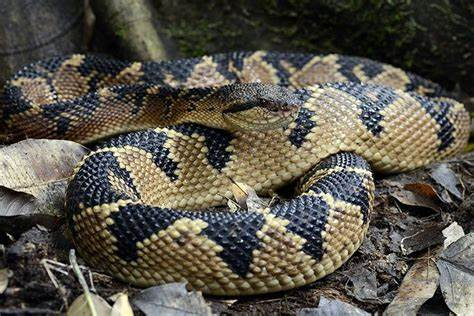

With that many species of snakes only around 600 are venomous. (Don't worry though; only about 200 of those species can be lethal.)
Although with that many venomous snakes in the world, it's always a good idea to know the numbers to call, such as 911.
With how "scary" snakes can come off as they truly want nothing to do with you in the wild. They would only attack if you try to mess with them first. There is one snake in the world that will actively chase a human which is the Central American Bushmaster. It's scienctific name is "Lachesis stenophrys" and it resides in more of the tropical forest of Costa Rica and Panama.
(These snakes just look like they're mean)
These reptiles are carnivorous. Huge snakes such as boas, pythons, and anacondas can consume large animals. Smaller snakes though, consume smaller animals. The tinier snakes diet typically involves invertebrates and insects, though some can eat eggs. Snakes eat whatever they can get. Their common resource for food are frogs, rats, chicken and the like The diet of the snakes varies according to the season, the animal that is available in plenty becomes their prey. Their diet counts a lot on their growth. A few of them particularly consume warm blooded animals such as birds, rodents, and rabbits. Others will consume earthworms, slugs, eggs, other kinds of reptiles, fish, insects, amphibians or frogs. Snakes can't chew their food so they swallow their food in one piece. If you're looking to own a snake it's always a good idea to do reasearch on the specific snake to check their diet and how to feed them. Not everyone would be comfortable feeding a hamster to even a rabbit to their snake.
With how many species there are, where can they be found?
Suprisingly they can found everywhere except in Antarctica, Iceland, Ireland, Greenland, and New Zealand.
| Location | Species # |
|---|---|
| North America | 150 species |
| South America | 186 species |
| Europe | 50 species |
| Asia | Around 60 species |
| Africa | 137 species |
| Australia | 34 species |
| Antarctica | zero |
| Oceans | 20 species |
- The end of a snake's tongue is forked, the two tips taste different amounts of chemicals. Essentially, a snake “smells in stereo” and can even tell which direction a smell is coming from.
- Larger snakes, such as boas, have heat-sensing organs called labial (lip) pits in their snouts
- The amount of food a snake eats determines how many offspring it will have.
- Snakes typically need to eat only 6 to 30 meals each year to be healthy.
- The longest snake ever recorded is the reticulated python. It can reach over 33 feet long, which is big enough to swallow a pig, a deer, or even a person.
- Sea snakes with their paddle-shaped tails can dive over 300 feet into the ocean.
- Some venomous snakes have died after biting and poisoning themselves by mistake.
- The venom from a Brazilian pit viper is used in a drug to treat high blood pressure.
- Two-headed snakes are similar to conjoined twins: an embryo begins to split to create identical twins, but the process does not finish.